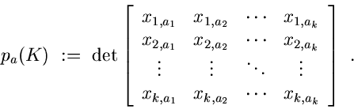

Next: 4.ii.b. Degrees of Schubert Varieties
Up: 4.ii The Special Schubert Calculus
4.ii.a The Geometry of Grassmann Varieties
We develop further geometric properties of Grassmann varieties.
The kth exterior power of the embedding
K --> Cn of a k-plane K into
Cn gives the embedding
whose image is a 1-dimensional subspace of the kth exterior power of
Cn, and hence a point in the projective space
PM-1, where M is the number of k
subsets of the numbers 1, 2, ..., n, the binomial coefficient
n!/k!(n-k)!.
This point determines the k-plane K uniquely.
The Plücker embedding is the resulting projective embedding of the
Grassmannian
Gr(k, n) ----> PM-1.
The n!/k!(n-k)! homogeneous Plücker
coordinates for the Grassmannian in this embedding are realized concretely as
follows.
Represent a k-plane K as the row space of a
k by n matrix, also written K.
A maximal minor of K = (xij)
is the determinant of a k by k submatrix
of K:
Given a choice of columns
a : a1 < a2 < ... <
ak with ak at most n, set
pa(K) := det (K|a),
where K|a is the submatrix of K consisting of
the columns from a:

The vector (pa(K)) of N maximal minors of
K defines the map (4.4) giving
Plücker coordinates for K.
Let Cn,k be the collection of these indices of
Plücker coordinates.
The indices a, b in
Cn,k have a natural Bruhat order
b \leq a <==>
bj \leq aj
for every j from 1 to k .
The Schubert variety Xa is
|
Xa = {K in Gr(k, n) |
pb(K) = 0 whenever b is not less than or
equal to a} .
|
(4.5) |
This has dimension
|a| := a1-1 + a2-2 + ...
+ ak-k.
The relevance of the Plücker embedding to Question 4.3 when each
li equals 1 is seen as follows.
Let L be a (n-k)-plane, represented as the row space of a
(n-k) by n matrix, also written L.
Then a general k-plane K meets L non-trivially if and
only if
Laplace expansion along the rows of K gives
|
|
= |
 |
pa(K) La ,
|
|
(4.6) |
where the sum is over all a in Cn,k
and La is the appropriately signed minor of L given
by the columns complementary to a.
Hence the set X(L) of k-planes that meet the
(n-k)-plane L non-trivially is a hyperplane section of
the Grassmannian in its Plücker embedding.
Thus the set of k-planes meeting k(n-k) general
(n-k)-planes non-trivially is a complementary linear section
of the Grassmannian, and so the number d(k,n)
of such k-planes is the degree of the Grassmannian in its Plücker
embedding.
More generally, if a in Cn,k and
L1, L2, ..., L|a|
are general (n-k)-planes, then the number of points in the
intersection of the Schubert varieties
|
X(L1), X(L2),
..., X(L|a|)
|
(4.7) |
is the degree d(a) of the Schubert variety
Xa, which we
compute in the next section.
Next: 4.ii.b. Degrees of Schubert Varieties
Up: 4.ii The Special Schubert Calculus